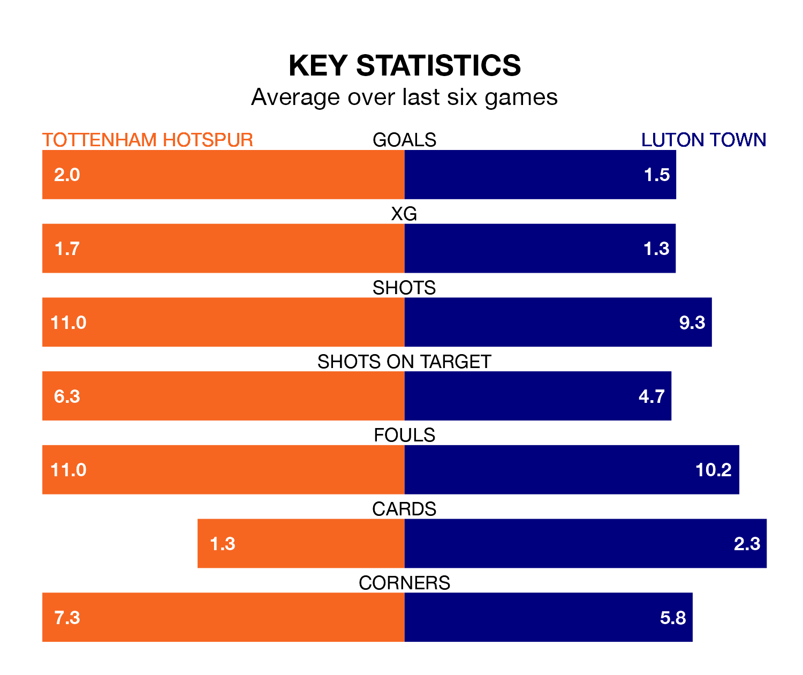

Tottenham Hotspur are heavy favourites to keep all three points at home in Saturday's kick-off against Luton Town.
Spurs, who sit fifth in the Premier League with 28 games played, are priced at 1.3 to seal victory at the Tottenham Hotspur Stadium.
Sitting 13 places and 31 points behind them in the table, Luton are 7.5 to win with *Betting Company*, while the draw is at 5.9.
Spurs are in mixed form in the Premier League, with three wins and a draw from their last six games.
With no wins and two draws over that period, Luton's form is much worse – they have taken two points from 18, compared to Tottenham's 10.
With 59 goals in 28 games so far this season, the hosts are scoring more than average in the league with 2.1 goals per game. And they are conceding fewer than average, letting in 42 goals at a rate of 1.5 per game.
Town, meanwhile, are below average scorers, with 1.4 goals per game, compared to a league average of 1.6. They have conceded 2.1 goals per game.
In Heung-Min Son, Spurs have one of the league's sharpest shooters so far this season. He has notched 14 goals in 25 appearances, to sit fifth in the scoring charts.
His goal rate of one every 149 minutes is slightly quicker than that of Elijah Adebayo, the Hatters' top scorer with a goal every 129 minutes, and a total of nine goals in 23 games.
Spurs's last match was on March 16, a 3-0 loss against Fulham.
Luton drew 1-1 with Nottingham Forest last time out, also on March 16, with Luke Berry on the scoresheet.
Updated: 10:19 (UTC), 22/03/24